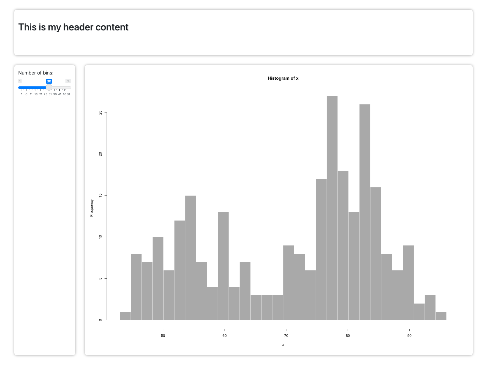
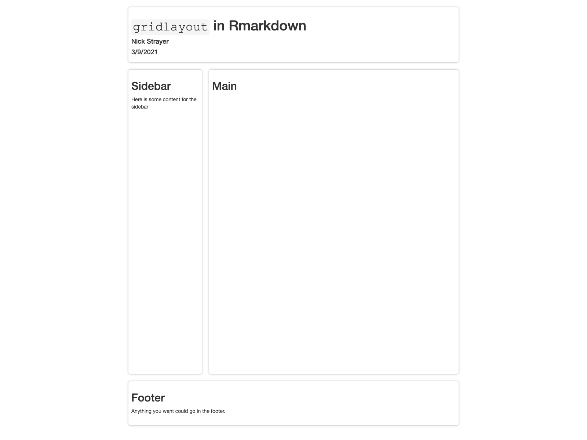

flexdashboard cangridlayoutExtra package with new grid_panels is easy to make.You can install the development version from GitHub with:
# install.packages("devtools")
devtools::install_github("rstudio/gridlayout")gridlayout
The easiest and most common way to specify a grid layout is using a markdown table syntax. This allows you to use any markdown table editor of your choice to configure your layout.
library(gridlayout)
my_layout <- new_gridlayout("
| |120px |1fr |1fr |
|------|--------|-------|-------|
|100px |header |header |header |
|1fr |sidebar |plot_a |plot_c |
|1fr |sidebar |plot_b |plot_b |"
)
my_layout
#> gridlayout of 5 elements:
#> 120px 1fr 1fr
#> 100px header header header
#> 1fr sidebar plot_a plot_c
#> 1fr sidebar plot_b plot_b
#> Gap of 1rem. Total height of viewport.
#>
#> Alternate layouts:
#>
#> - Width < 500px
#> 1fr
#> 85px header
#> 350px sidebar
#> 350px plot_a
#> 350px plot_b
#> 350px plot_c
#> Gap of 1rem. Total height of auto.You can also use the top left cell of your table to specify the gap size.
my_layout <- new_gridlayout("
| 25px |120px |1fr |1fr |
|------|--------|-------|-------|
|100px |header |header |header |
|1fr |sidebar |plot_a |plot_c |
|1fr |sidebar |plot_b |plot_b |"
)
my_layout
#> gridlayout of 5 elements:
#> 120px 1fr 1fr
#> 100px header header header
#> 1fr sidebar plot_a plot_c
#> 1fr sidebar plot_b plot_b
#> Gap of 25px. Total height of viewport.
#>
#> Alternate layouts:
#>
#> - Width < 500px
#> 1fr
#> 85px header
#> 350px sidebar
#> 350px plot_a
#> 350px plot_b
#> 350px plot_c
#> Gap of 1rem. Total height of auto.You can also programatically build your layout using new_gridlayout. Here you simply pass a list of the elements that make up your layout along with column and row sizes.
library(gridlayout)
# Assemble list of elements along with their positions
elements_list <- list(
list(id = "header", start_row = 1, end_row = 1,
start_col = 1, end_col = 2),
list(id = "plot", start_row = 2, end_row = 2,
start_col = 1, end_col = 1),
list(id = "table", start_row = 2, end_row = 2,
start_col = 2, end_col = 2),
list(id = "footer", start_row = 3, end_row = 3,
start_col = 1, end_col = 2)
)
new_gridlayout(
elements_list,
col_sizes = c("1fr", "2fr"),
row_sizes = c("100px", "1fr", "1fr")
)
#> gridlayout of 4 elements:
#> 1fr 2fr
#> 100px header header
#> 1fr plot table
#> 1fr footer footer
#> Gap of 1rem. Total height of viewport.
#>
#> Alternate layouts:
#>
#> - Width < 500px
#> 1fr
#> 85px header
#> 350px plot
#> 350px table
#> 350px footer
#> Gap of 1rem. Total height of auto.Once you’ve setup your layout you can use it in a Shiny app with the grid_page() ui function:
library(shiny)
my_layout <- "
| | | |
|------|--------|-------|
|2rem |200px |1fr |
|150px |header |header |
|1fr |sidebar |plot |"
# The classic Geyser app with grid layout
shinyApp(
ui = grid_page(
layout = my_layout,
header = h2("Old Faithful Geyser Data"),
sidebar = sliderInput("bins","Number of bins:", min = 1, max = 50, value = 30),
plot = plotOutput("distPlot", height = "100%")
),
server = function(input, output) {
output$distPlot <- renderPlot({
x <- faithful[, 2]
bins <- seq(min(x), max(x), length.out = input$bins + 1)
hist(x, breaks = bins, col = 'darkgray', border = 'white')
})
}
)Screenshot of grided geyser app running
grid_page() will automatically make your gridlayout fill the entire page. If you are interested in having a finer-grain control over the size and position of your grid layout you can use the grid_container() function to place your grid layout wherever you want. The equivalent app to above can be created by replacing the UI definition with a fluidPage containing a grid_container():
...
shinyApp(
ui = fluidPage(
theme = bslib::bs_theme(),
grid_container(
id = "main_grid",
layout = my_layout,
container_height = "800px",
elements = list(
header = h2(id = "header", "This is my header content"),
sidebar = sliderInput("bins","Number of bins:", min = 1, max = 50, value = 30),
plot = plotOutput("distPlot", height = "100%")
)
)
),
server = ...
)This time, however the grid is constrained to 800px tall, no-matter how large or small the window viewing it is.
The function use_gridlayout_rmd() called in the setup chunk of an RMarkdown file will enable you to use gridlayout to layout your document. Just match the section headers to the layout element names and place layout md table in a gridlayout chunk…
my_app.rmd
---
title: "`gridlayout` in Rmarkdown"
author: "Nick Strayer"
date: "3/9/2021"
output: html_document
---
## Main
```gridlayout
| | | |
|------|--------|---------|
|2rem |200px |1fr |
|150px |header |header |
|1fr |sidebar |main |
|120px |footer |footer |
```
## Sidebar
Here is some content for the sidebar
## Footer
Anything you want could go in the footer.
Output of my_app.rmd
Once you have your gridlayout object, you can convert it to a markdown table spec or to the CSS that generates the given grid.
cat(to_md(my_layout))
#> | | | | |
#> |------|--------|-------|-------|
#> |25px |120px |1fr |1fr |
#> |100px |header |header |header |
#> |1fr |sidebar |plot_a |plot_c |
#> |1fr |sidebar |plot_b |plot_b |
cat(to_css(my_layout))
#>
#>
#> body {
#> display:grid;
#> grid-template-rows:100px 1fr 1fr;
#> grid-template-columns:120px 1fr 1fr;
#> grid-gap:25px;
#> padding:25px;
#> height:100vh;
#> }
#>
#> #header {
#> grid-column-start:1;
#> grid-column-end:4;
#> grid-row-start:1;
#> grid-row-end:2;
#> }
#> #sidebar {
#> grid-column-start:1;
#> grid-column-end:2;
#> grid-row-start:2;
#> grid-row-end:4;
#> }
#> #plot_a {
#> grid-column-start:2;
#> grid-column-end:3;
#> grid-row-start:2;
#> grid-row-end:3;
#> }
#> #plot_b {
#> grid-column-start:2;
#> grid-column-end:4;
#> grid-row-start:3;
#> grid-row-end:4;
#> }
#> #plot_c {
#> grid-column-start:3;
#> grid-column-end:4;
#> grid-row-start:2;
#> grid-row-end:3;
#> }
#>
#>
#>
#> .grid_panel {
#> --card-padding: 0.8rem;
#> box-sizing: border-box;
#> overflow: hidden;
#> display: grid;
#> grid-template-areas: "title"
#> "content";
#> /* When there's no title the column will dissapear */
#> grid-template-rows: min-content 1fr;
#> }
#>
#> .grid_panel .title-bar {
#> grid-area: title;
#> height: 100%;
#> width: 100%;
#> display: flex;
#> justify-content: start;
#> align-items: center;
#> border-bottom: 1px solid rgba(0,0,0,0.125);
#> padding: calc(var(--card-padding)/2) var(--card-padding);
#> }
#> .grid_panel .title-bar > h3 {
#> margin: 0;
#> height: 100%;
#> }
#>
#> .panel-content {
#> height: 100%;
#> width: 100%;
#> padding: var(--card-padding);
#> grid-area: content;
#> }
#>
#> .grid_panel .shiny-plot-output > img {
#> /* The way grid sizing works can throw off the plot sizing in shiny. This
#> is because the size of the parent grows to its largest child element.
#> Shiny's plot output uses fixed pixel sizing. Shiny tries to update
#> these sizes by looking at the parent div's dimensions after a resize.
#> When the window has been made smaller, this means that the parent
#> element is spilling outside of its box because the plot image size is
#> still sitting at a fixed pixel width of the previous size. So when Shiny
#> queries the size of the parent it thinks that nothing has changed. By
#> setting a max width and height, we make sure the plot always gets shrunk
#> to at most the size of the grid element, thus allowing the resize observer
#> to work properly.
#> */
#> max-width: 100%;
#> max-height: 100%;
#> }
#>
#> /* Only set card styles if we're not using the bslib card component */
#> .grid_panel:not(.card) {
#> box-shadow: 0 0 0.5rem rgb(0 0 0 / 35%);
#> border-radius: 0.5rem;
#> }
#>
#>
#> .grid_panel.collapsed {
#> grid-template-rows: min-content 0;
#> height: min-content;
#> overflow: hidden;
#> }
#>
#> /* Make flip arrow point down when collapsed and
#> up when expanded to show result of clicking */
#> .grid_panel .collapser-icon svg {
#> transition: transform 0.2s ease;
#> }
#> .grid_panel.collapsed .collapser-icon svg {
#> transform: scaleY(-1);
#> }
#>
#> .grid_panel.collapsed .panel-content {
#> display: none;
#> }
#>
#> /* Make everything line up nice and cleanly like it should in the middle */
#> .title_panel {
#> margin: 0;
#> height: 100%;
#> display: flex;
#> align-items: center;
#> }
#>
#> /* Makes it so tabpanels work in gridpanels */
#> .grid_panel .tabbable { height: 100% }
#> .grid_panel .tabbable > .nav { height: 42px; }
#> .grid_panel .tabbable .tab-content { height: calc(100% - 42px); }
#> .grid_panel .tabbable .tab-pane { height: 100%; }
#>
#> @media (max-width:500px) {
#>
#> body {
#> display:grid;
#> grid-template-rows:85px 350px 350px 350px 350px;
#> grid-template-columns:1fr;
#> grid-gap:1rem;
#> padding:1rem;
#> height:auto;
#> }
#>
#> #header {
#> grid-column-start:1;
#> grid-column-end:2;
#> grid-row-start:1;
#> grid-row-end:2;
#> }
#> #sidebar {
#> grid-column-start:1;
#> grid-column-end:2;
#> grid-row-start:2;
#> grid-row-end:3;
#> }
#> #plot_a {
#> grid-column-start:1;
#> grid-column-end:2;
#> grid-row-start:3;
#> grid-row-end:4;
#> }
#> #plot_b {
#> grid-column-start:1;
#> grid-column-end:2;
#> grid-row-start:4;
#> grid-row-end:5;
#> }
#> #plot_c {
#> grid-column-start:1;
#> grid-column-end:2;
#> grid-row-start:5;
#> grid-row-end:6;
#> }
#>
#> }If you want to get at the individual components or “elements” stored in your grid you can use get_elements().
head(get_elements(my_layout), 2)
#> [[1]]
#> [[1]]$id
#> [1] "header"
#>
#> [[1]]$start_row
#> [1] 1
#>
#> [[1]]$end_row
#> [1] 1
#>
#> [[1]]$start_col
#> [1] 1
#>
#> [[1]]$end_col
#> [1] 3
#>
#>
#> [[2]]
#> [[2]]$id
#> [1] "sidebar"
#>
#> [[2]]$start_row
#> [1] 2
#>
#> [[2]]$end_row
#> [1] 3
#>
#> [[2]]$start_col
#> [1] 1
#>
#> [[2]]$end_col
#> [1] 1